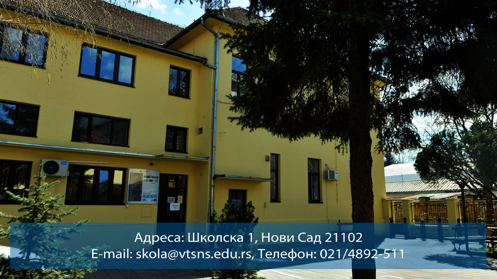
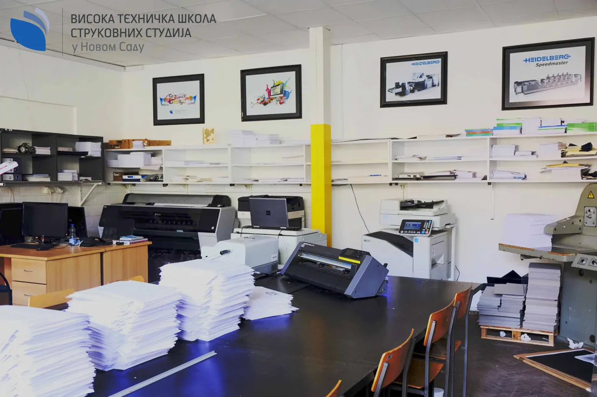

Visoka tehnička škola strukovnih studija
Visoka tehnička škola strukovnih studija je visokoškolska ustanova koja obrazuje stručnjake osposobljene za savremeno tržište rada, sa posebnim naglaskom na primenu praktičnih znanja i veština u oblasti tehničko-tehnoloških nauka.
Tradicionalno obrazovanje u oblasti inženjerstva i informacionih tehnologija. Visoka tehnička škola (VTŠ) u Novom Sadu pruža savremene akreditovane studijske programe iz oblasti web dizajna, inženjerstva zaštite, mašinstva i informacionih tehnologija.


Nastava i praksa
Visoka tehnička škola strukovnih studija pruža savremeno obrazovanje usmereno na sticanje praktičnih znanja i veština neophodnih za uspešnu profesionalnu karijeru. Kroz kvalitetne studijske programe i stručnu nastavu, studenti se pripremaju za konkretne izazove savremenog tržišta rada.
Nastavni proces je organizovan u skladu sa aktuelnim obrazovnim standardima, uz poseban akcenat na praktičnu nastavu, laboratorijske vežbe i stručnu praksu. Škola neguje blisku saradnju sa privredom, čime studentima omogućava direktan kontakt sa realnim radnim okruženjem
Nastava se izvodi u moderno opremljenim učionicama i laboratorijama. Studentima je dostupan moderan informacioni sistem preko kojeg mogu da prijavljuju ispite, prate svoje ocene i druge informacije važne za njihovo studiranje. Škola ima ugovore sa mnogobrojnim preduzećima u kojima studenti obavljaju stručnu praksu. U školi se organizuje priprema za polaganje stručnog ispita iz bezbednosti i zdravlja na radu. Škola učestvuje u međunarodnim i domaćim projektima, i organizator je konferencija i stručnih skupova.
Studijski programi
Prvi stepen visokoškolskog obrazovanja – trogodišnje osnovne strukovne studije...
Veb dizajn, Informacione tehnologije, Graficki dizajn, Masinsko inzenjerstvo, Inzenjerstvo sredine
Saznajte vise
nformacije o studijskim programima, rasporedu nastave i studentskim obavezama dostupne su na sajtu skole. Za dodatna pitanje studenti se mogu obrTiti studentskoj sluzbi ili putem kontakt forme.